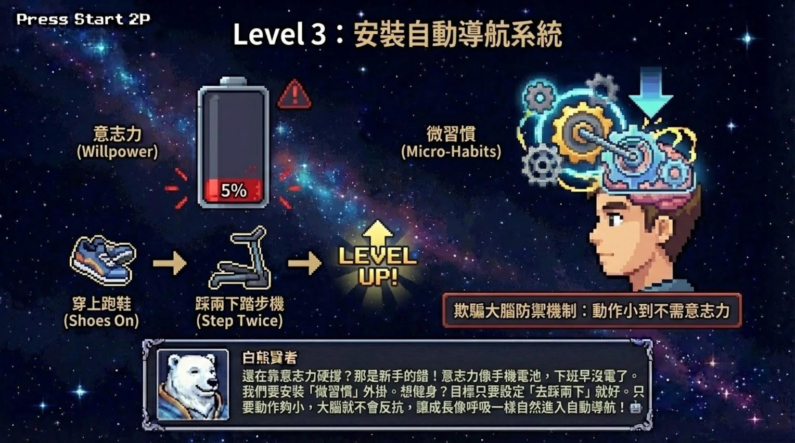

入門單品
如果你現在最卡的是願望不清、目標太散、行動力忽高忽低，先不用買全包。用一份 PDF，每天一個願望校準練習，連續 45 天。

把「我不要這樣」改成「我要往哪裡去」，讓大腦每天搜尋正確方向。
每天只承諾一個能在今天完成的微行動，降低啟動阻力。
每天辨識一個會消耗信念的比較、焦慮或自我否定。
用晚間回顧把微行動收進系統，讓 45 天不是靠意志力硬撐。
升級路徑
NT$249 單品處理願望校準；NT$399 全包則加入攝影機思維除錯卡、心靈 NAS 權限表、Life OS 一頁儀表板與 7 天引導信。